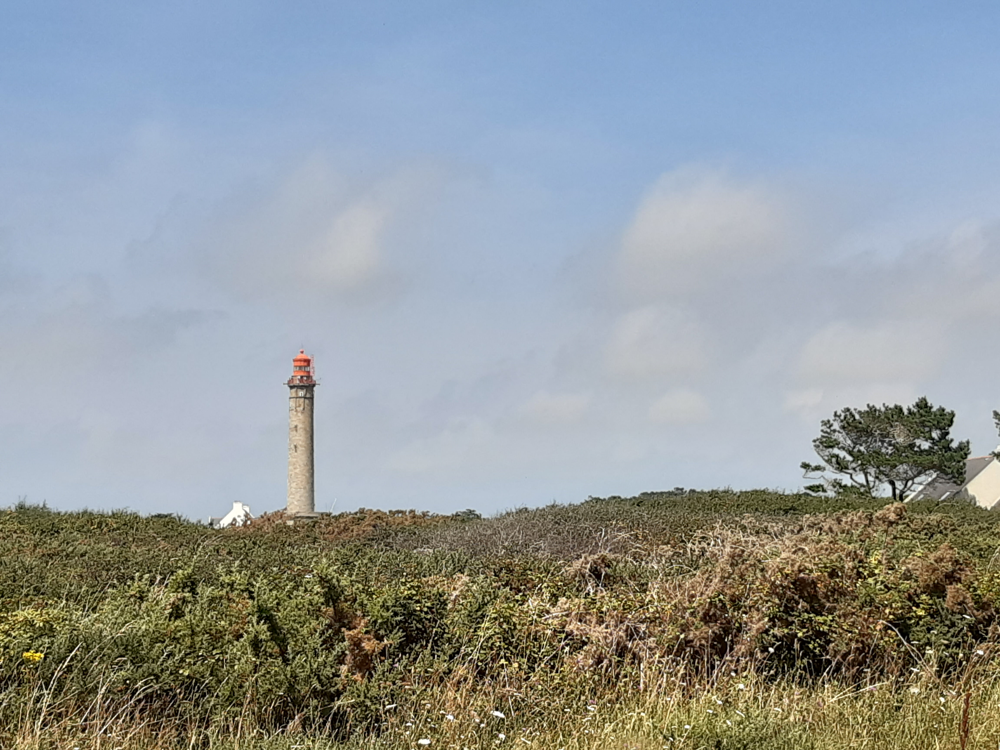
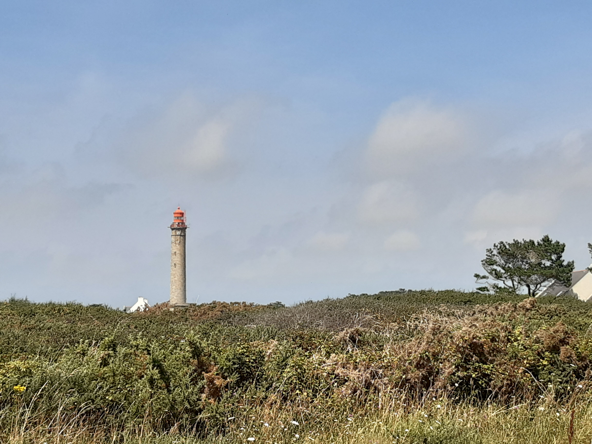

Retour
Morbihan
Tour de la presqu'île de Rhuys par le GR34
- Type : aller simple
- Description de l'itinéraire : GR34 de Penvins à Saint-Colombier
- Distance : 72 km
- Dénivelé positif : 500 m
- Point le plus bas : 0 m
- Point le plus haut : 32 m
- Cotation en l'absence de neige : T1
- Intérêt : 4/5
- Date : parcouru dans la majeure partie sur plusieurs années
- Photos : aucune
GR340 : tour de Belle-Île-en-Mer
- Type : boucle
- Description de l'itinéraire : GR340
- Distance : 75 km
- Dénivelé positif : 1680 m
- Point le plus bas : 0 m
- Point le plus haut : 60 m
- Cotation en l'absence de neige : T1
- Intérêt : 4/5
- Date : parcouru dans la majeure partie pendant l'été 2021
- Photos :
 La pointe des Poulains
La pointe des Poulains
 La côte sauvage
La côte sauvage
 La côte sauvage
La côte sauvage
 Les aiguilles de port Coton
Les aiguilles de port Coton
 Les aiguilles de port Coton
 Le phare Goulphar
Les aiguilles de port Coton
 Le phare Goulphar
Tour de l'Île d'Hœdic
- Type : boucle
- Description de l'itinéraire : sentier cotier
- Distance : 8 km
- Dénivelé positif : 100 m
- Point le plus bas : 0 m
- Point le plus haut : 13 m
- Cotation en l'absence de neige : T1
- Intérêt : 3/5
- Date : ?
- Photos : aucune
L'Île de Groix
- Type : boucle
- Description de l'itinéraire : sentier cotier de port Tudy à Kersauze, puis PR passant par le Bourg
- Distance : 11 km
- Dénivelé positif : 200 m
- Point le plus bas : 0 m
- Point le plus haut : 42 m
- Cotation en l'absence de neige : T1
- Intérêt : 3/5
- Date : juillet 2023
- Photos : aucune